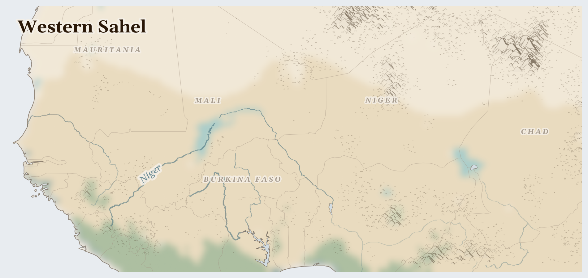

Western Sahel
Mauritania, Niger, Chad and 2 more countries
Afrotropic
This is the land where the world's biggest desert, the Sahara, slowly turns into grass. It is wide and golden, with huge baobab trees that look like they were planted upside-down. When the rains come, everything turns green at once.
How Life Works Here
Life here follows the rain. Herders walk with their cattle to wherever the grass is growing. Farmers plant millet and wait for the wet season. Families share deep wells, and children learn early how precious every bucket of water is.
Fulani herders (800,000+ cattle).
Buduma fishing communities (navigating shrinking lake), Kanuri shoreline farmers (recession agriculture in exposed lakebed), Pastoral households watering livestock at lake margins.
Young men drawn from farming (tens of thousands), JNIM and ISGS people with weapons controlling and taxing sites, Wagner/Africa Corps contractors guarding industrial concessions.
What Is Happening
The rains have been coming less often, so the grass and the harvests are smaller. And in some places, people with weapons have made villages unsafe — people have been killed, and many families have had to move to safer towns. That is very hard. But people here know how to help each other: villages welcome families who arrive with almost nothing, and they share what little they have.
Something Wonderful
People across Africa are planting a line of trees and gardens thousands of kilometres long — from the ocean in the west all the way to the east. It is called the Great Green Wall, and it is meant to hold back the desert. Imagine planting a forest as long as a whole continent!
Let's Do Something Together
Where Does Our Food Come From?
Look at something you ate today. Where did it grow? If you have a map, try to find the country. Food travels a very long way to reach our plates! In some places, families grow their own food, but when the rains do not come, the crops cannot grow.
- food packaging with country of origin
- world map or globe
For grown-ups
Global supply chains connect consumer choices to land use in crisis regions. Cash crop exports (coffee, cocoa, palm oil) often displace subsistence farming, making communities dependent on volatile markets.
Let Us Pray Together
God, bless the farmers who grow our food. Help families whose crops did not grow.
Leader: We pray for those who are hungry. For the millions across Western Sahel who cannot meet their daily food needs.
All: Lord, hear our prayer.
Leader: We pray for the displaced. For the millions driven from their homes.
All: Lord, hear our prayer.
Leader: We pray for Niger. Especially for Niger, facing the most severe convergence of crises in this region.
All: Lord, hear our prayer.
Leader: We pray for the helpers. For humanitarian workers and missionaries in Western Sahel.
All: Lord, hear our prayer.
As the deer longs for the water brooks, so longs my soul for you, O God. My soul is athirst for God, even for the living God; when shall I come before the presence of God?
Collect
Almighty God, who sent your Holy Spirit to be the life and light of your Church: open our hearts to the riches of your grace, that we may bring forth the fruit of the Spirit in love and joy and peace; through Jesus Christ your Son our Lord, who is alive and reigns with you, in the unity of the Holy Spirit, one God, now and for ever.
Amen.
Talk About It
Some girls here walk for hours every day to fetch water for their families. What do you do every day to help at home? What would you talk about together on a very long walk?
One Thing We Can Do
Tonight when you turn on a tap, count to three before the water comes out. Then say thank you — for the water, and for the people who don't have taps yet, that they get their wells and their rain.